Как отладить проект
В этом примере вы запустите проект в режиме отладки и после остановки на точке останова продолжите пошаговое исполнение приложения. В качестве примера вы исследуете процесс программного формирования формы СделкиВоронкаПродаж, которая открывается после запуска приложения DEMO CRM.
Откройте демонстрационное приложение DEMO CRM в среде разработки и выполните следующие действия:
- Ваша задача заключается в том, чтобы узнать имя формы, которая открывается в разделе Главная. Из предыдущих
примеров вы уже знаете, где находится командный интерфейс. Чтобы посмотреть его нажмите на элемент
проекта ПанельНавигации;
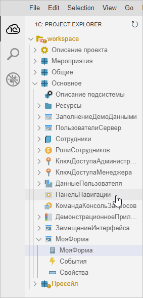
- Из YAML-файла вы видите, что навигационная команда в разделе Главная открывает
форму СделкиВоронкаПродаж;
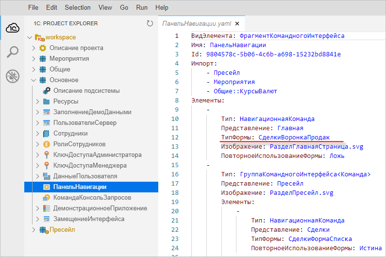
- Чтобы найти эту форму перейдите в панель SEARCH и введите имя формы в строку поиска. Будет найден файл компонента
интерфейса с интересующим вас именем. Откройте его;
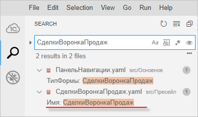
- Компонент интерфейса СделкиВоронкаПродаж унаследован от системного компонента Форма. Поэтому у него есть событие ПослеСоздания, которое
обрабатывается в методе с именем ПослеСоздания;
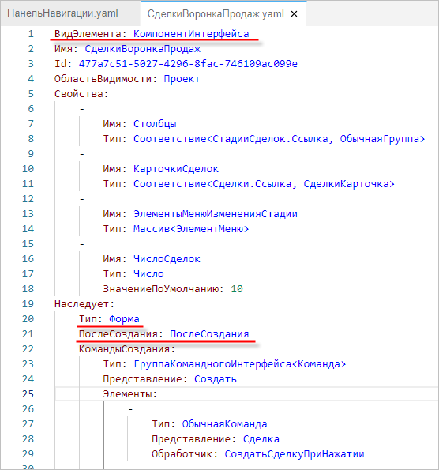
- Самое подходящее место, в котором нужно искать метод ПослеСоздания — это модуль компонента
СделкиВоронкаПродаж. Нажмите на него;
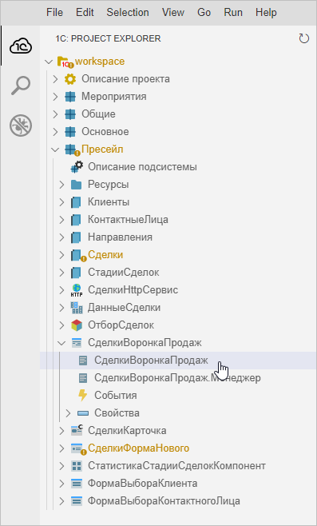
- Откройте справа панель OUTLINE. В ней перечислены все методы модуля, который вы открыли. Нажмите на метод
ПослеСоздания, чтобы спозиционироваться на нем в модуле;
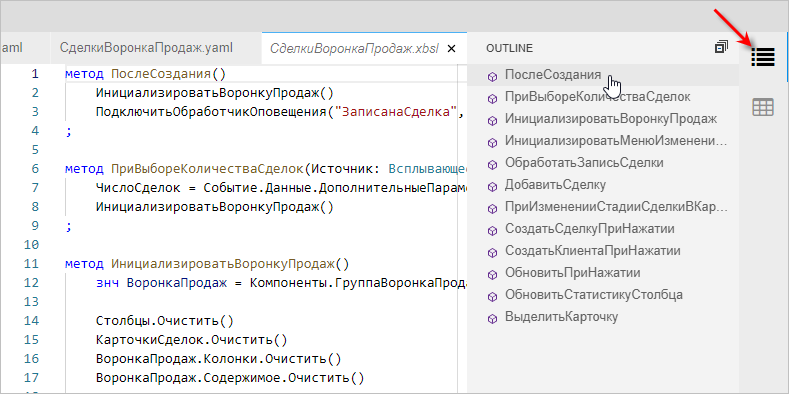
- В этом методе вызывается метод ИнициализироватьВоронкуПродаж(). Нажмите
Ctrl+F11, чтобы перейти к определению этого метода (или нажмите Go to
Defenition в контекстном меню модуля);
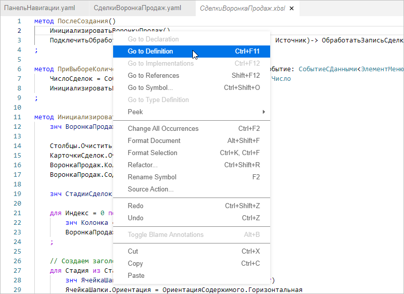
- Включите точку останова в первой строке модуля. Для этого нажмите слева от номера строки;
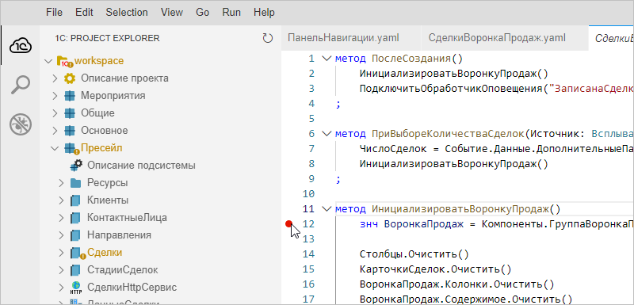
- Если вы вносили изменения в проект, опубликуйте его, прежде чем запускать отладку;
- Чтобы запустить отладку нажмите F5 или в меню;
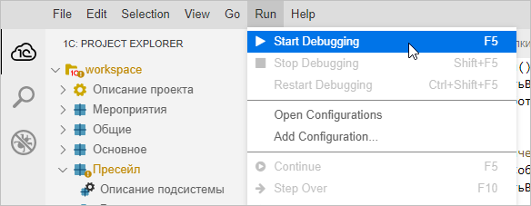
- «1С:Кабинет сотрудника» запустит приложение и сообщит, что запущена отладка браузера;
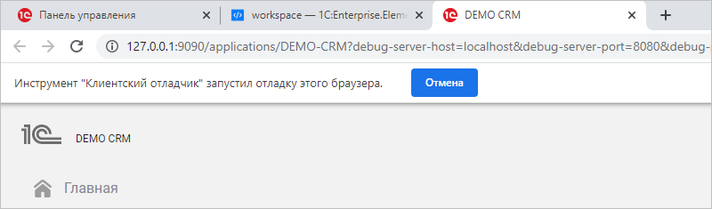
Возможная проблема: Не закрывайте панель "Инструмент "Клиентский отладчик" запустил ...", иначе отладка перестанет работать. - Вернитесь на вкладку со средой разработки; Отлаживаемый модуль будет открыт на строке, в которой вы установили точку останова, а слева
будет открыта панель DEBUG;
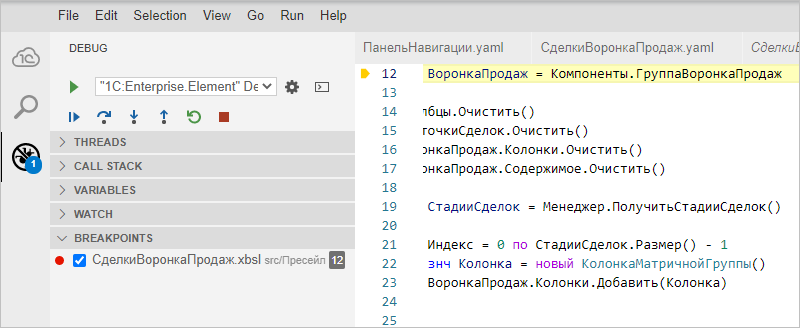
- Панель DEBUG содержит все необходимые инструменты для отладки приложения. В помощью команд в панели или с помощью
горячих клавиш вы можете выполнять пошаговую отладку приложения;
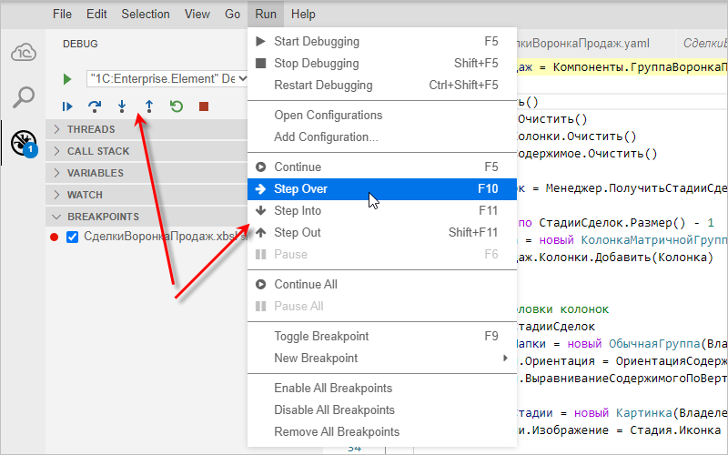
- В процессе отладки можно анализировать, например, значения локальных переменных модуля (группа VARIABLES) или
значения вычисляемых выражений (группа WATCH);
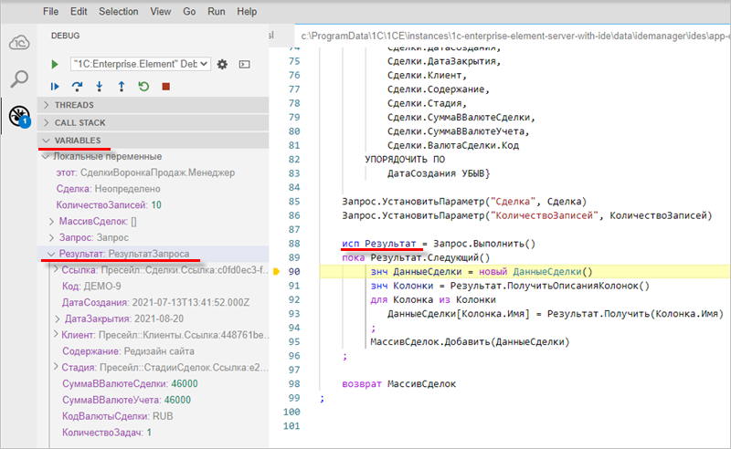